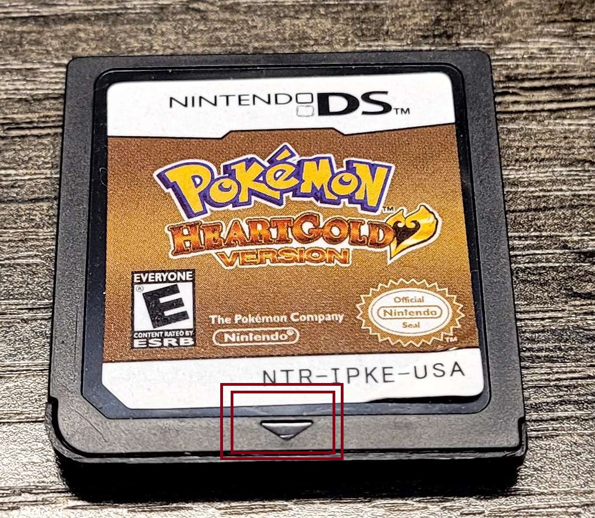

A lot of this info is coming directly from the website GameVerifying.com. If you have trouble understanding my layout, or perhaps are just curious about knowing more, that's absolutely the place to go!
With the general price of Pokemon games skyrocketing in a short span of time, so too has the volume of counterfeit cartridges being circulated. It should be a genuine concern every time you plan on buying a new Pokemon game, especially when it's a more expensive title like Platinum or HGSS. As good as counterfeits are getting, it is very rare that the counterfeit cartridge will have every single detail correct, and with enough knowledge and info from online you should easily be able to discern fakes from real carts. From physical defects, to serial number issues, to simply using the wrong sticker art, here's a comprehensive list of things to look out for and compare when buying a Gen 4 cart.
What to Look For First
The first thing to look at with these cartridges is the physical appearance. While most fake carts will not have every single one of these errors, it is very likely at least one will be present. If you're buying online and the pictures from the seller don't show these particular areas, don't be afraid to ask for more pictures to confirm. There are many things to look out for that are dead giveaways, such as:
Rounded Corner on Sticker
Font Size and Depth being wrong (too thick or too deep)
Contacts being Brass instead of Gold (not as shiny)
In my personal experience, the defect I've most often seen, as well as being the easiest to detect, is the depth and font of the NTR number on the back of the cartridge. Below you can see examples.
Pokemon Platinum
Front
Back
-Rounded Corner On Sticker
-Red Beam Goes Under Nintendo Logo Instead of Through it
-Arrow Indent is too Deep
Image of a REAL Platinum Image of a FAKE Platinum
-NTR-005 and Nintendo Logo Depth
-Gold Contacts on Real Carts vs. Brass Contacts on Fake Carts
-Lack of space between PAT. and PEND. (Not Pictured)
REAL Platinum Cartridge
Fake Platinum Cartridge
(Notice how much deeper and darker the text is)
(Notice how dull the brass contacts are)
Pokemon Diamond/Pearl
Front
Back
-Rounded Corner On Sticker (Not Pictured)
-Arrow Indent is too Deep
Image of a REAL Diamond
Image of a FAKE Diamond
(Notice how accurate the sticker can be, but the arrow indent is too deep)
-NTR-005 and Nintendo Logo Depth
-Gold Contacts on Real Carts vs. Brass Contacts on Fake Carts
-Lack of space between PAT. and PEND.
REAL Diamond Cartridge
Fake Diamond Cartridge
(Notice how much deeper and darker the text is)
(Notice the lack of space between PAT. and PEND.)
(Notice how dull the brass contacts are)
Pokemon HeartGold/SoulSilver
Front
Back
-Cartridge is not Purple-Red when light is shone through
-Rounded Corner On Sticker (Not Pictured)
-Arrow Indent is too Deep
Image of a REAL Heart Gold

Image of a FAKE Heart Gold
(Notice how the cartridge is a darker black, but NOT transparent)
-NTR-005 and Nintendo Logo Depth
-Gold Contacts on Real Carts vs. Brass Contacts on Fake Carts
-Lack of space between PAT. and PEND. (Not Pictured)
REAL Heart Gold Cartridge
FAKE Heart Gold Cartridge Cartridge
(Notice how much deeper and darker the text is)
(Notice it says NTR-005, which is for regular grey carts, rather than NTR-031)
Comparing Serial Codes and Stamps
A FAKE HeartGold, which displays the wrong NTR number
If you don't want to make your judgement based solely on appearance, you can also compare serial numbers on the front, the NTR number on the back, and the black stamps on the back. Note that these stamps can wear off over time, and a cartridge without a stamp does not mean it is fake, but rather, likely just worn down over time. When comparing Heart Gold and Soul Silver carts, note that on the back, there will be a NTR number. There are two types of cartridges that will be used for Gen 4 Pokemon Games:
NTR-005
-Regular Gray Cartridge used for D/P/Pt
NTR-031
Darker, clear Infrared Cartridge used for HG/SS and BW/BW2
When buying a HG/SS cartridge, always ask for a picture of the cartridge against a light source. If the cartridge seems real, and the light shows the cartridge is a purple-red color, its most likely real. But you never know! Counterfeit carts are getting better and better and they're constantly changing. You should always try to find as many points as possible to prove the authenticity of a cartridge you're buying, such as the serial numbers below.
Pokemon Platinum
Serial Number On Front
Serial Number on Real English Platinum
FORMAT: N T R - C P U # - ? ? ?
NTR
-Will always be there for D/P/Pt
C
-All Platinum cartridges will have C
PU
-Two digit unique ID for each game
-PU is the 2 digit ID for Platinum
#
-This will change depending on the language. (E = English, F = French, J = Japanese, D = German)
???
-This is the packaging region
-(USA = USA - English, CDF = Canada - English/French, JPN = Japan - Japanese)
EXAMPLE: NTR-CPUJ-JPN
-A Japanese Platinum
Stamp on Back
Stamp on Real English Platinum, 1st revision, 13th print
FORMAT: C ## ? N * J **
C
-Will always be C for Platinum
##
-Unique two digit ID for each game
-Platinum will always be PU
?
-Displays the language of the game (E = English, J = Japanese, etc.)
N
-Present on all DS carts
*
-This digit is based on the revision of the cartridge and may change (0 = 1st revision, 13 = 14th revision, etc.)
J
-Present on all DS carts
**
These two digits are based on the print batch, will change. (0 = first print batch, 23 = 24th print batch, etc.)
EXAMPLE: CPUDN0J08
-A German Platinum, 1st revision, 9th Print
Pokemon Diamond/Pearl
Serial Number On Front
Serial Number on Real English Pearl
FORMAT: N T R - A (D/P) A # - ? ? ?
NTR
-Will always be there for D/P/Pt
A
-All Diamond/Pearl cartridges will have A
DA/PA
-Two digit unique ID for each game
-DA = Diamond, PA = Pearl
#
-This will change depending on the language. (E = English, F = French, J = Japanese, D = German)
???
-This is the packaging region
-(USA = USA - English, CDF = Canada - English/French, JPN = Japan - Japanese)
EXAMPLE: NTR-APAE-USA
-An English Pearl
Stamp on Back
Stamp on Real Japanese Pearl, 1st revision, 21st print
FORMAT: A ## ? N * J **
A
-Will always be A for Diamond/Pearl
##
-Unique two digit ID for each game
-DA = Diamond, PA = Pearl
?
-Displays the language of the game (E = English, J = Japanese, etc.)
N
-Present on all DS carts
*
-This digit is based on the revision of the cartridge and may change (0 = 1st revision, 13 = 14th revision, etc.)
J
-Present on all DS carts
**
These two digits are based on the print batch, will change. (0 = first print batch, 23 = 24th print batch, etc.)
EXAMPLE: APAEN5J19
-An English Pearl, 6th Revision, 20th Print
Pokemon HeartGold/SoulSilver
Serial Number On Front
Serial Number on Real SoulSilver
FORMAT: N T R - I (PK/PG) # - ? ? ?
NTR
-Will always be there for HG/SS
I
-All HG/SS carts will have an I (Infrared Cart)
PK/PG
-Two digit unique ID for each game
-PK = Heart Gold, PG = Soul Silver
#
-This will change depending on the language. (E = English, F = French, J = Japanese, D = German)
???
-This is the packaging region
-(USA = USA - English, CDF = Canada - English/French, JPN = Japan - Japanese)
EXAMPLE: NTR-IPKE-USA
-An English Heart Gold
Stamp on Back
Stamp on Real English Soul Silver, 1st revision, 34th print
FORMAT: I ## ? N * J **
(This can be very difficult to see on these darker NTR-031 cartridges)
I
-Will always be I for HG/SS (Infrared Cartridge)
##
-Unique two digit ID for each game
-PK = Heart Gold, PG = Soul Silver
?
-Displays the language of the game (E = English, J = Japanese, etc.)
N
-Present on all DS carts
*
-This digit is based on the revision of the cartridge and may change (0 = 1st revision, 13 = 14th revision, etc.)
J
-Present on all DS carts
**
These two digits are based on the print batch, will change. (0 = first print batch, 23 = 24th print batch, etc.)
EXAMPLE: IPKEN0J06
-An English Heart Gold, 1st Revision, 7th Print
What Else You Can Check
If you happen to have a copy of your game on hand, there are a few things that counterfeit cartridges have trouble dealing with. To be clear, these are NOT verification methods, but rather, some more checks you can employ if somehow the physical defects and serial numbers are still stumping you.
Some (a very small amount, from what I can find) counterfeit cartridges will refuse to boot on 3DS. This is mostly hearsay, as every fake cart I've come across has worked on a 3DS. But if you have some sort of early fake cart, there's a chance it won't work on a 3DS.
Counterfeit cartridges have a tendency to crash often. You can try cleaning the pads on the back with some 99% IPA, but to the nature of these cartridges being pretty unstable, constant crashing could be a sign of a counterfeit.
Some counterfeit carts will refuse to migrate Pokemon from Gen 3, or send Pokemon up to Gen 5
And finally, some cartridges will just, delete the save. These carts are made with the cheapest parts possible, and are prone to simply dying.